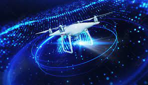

Introduction:
Drones are transforming industries from agriculture to filmmaking. This project examines the latest advancements in drone technology and their diverse applications.
Drones are transforming industries from agriculture to filmmaking. This project examines the latest advancements in drone technology and their diverse applications.
How drones optimize farming practices through precise monitoring

Enhancing emergency responses with drones.

Developments in autonomous flight capabilities.
Explore the evolving legal landscape surrounding drone use, including privacy and safety concerns.